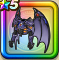

竜王の鎧上
攻略班 8.0点 / ギラ属性耐性+5%竜王への耐性+10%ドルマ属性耐性+5%ギラ属性耐性+5%メラ属性耐性+5%【レンジャー】ギラ属性ダメージ+2%ギラ属性ダメージ+5%
くわしい特徴
【レベル別習得スキル】 Lv1ギラ属性耐性+5% Lv5竜王への耐性+10% Lv8きようさ+7 Lv10ドルマ属性耐性+5% Lv12【レンジャー】ギラ属性ダメージ+2% Lv15ギラ属性ダメージ+5% Lv18ギラ属性耐性+5% Lv20【レンジャー】きようさ+7 Lv23守備力+5 Lv25メラ属性耐性+5% 【限界突破スキル】 1凸攻撃力+5 2凸守備力+5 3凸すばやさ+7 4凸さいだいHP+10